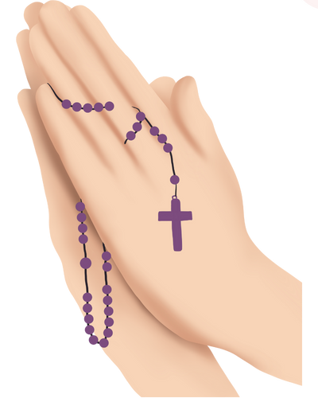
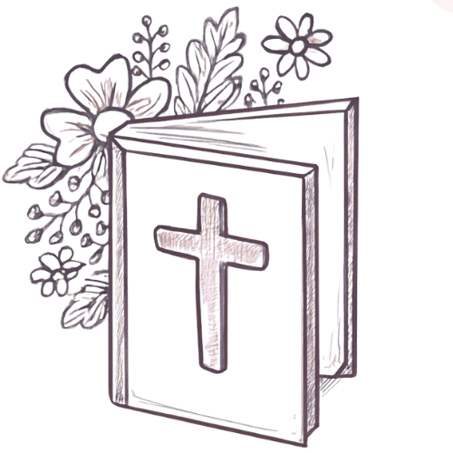

explore Esquemas
Guías prácticas, lecturas y sugerencias para ayudarte
a organizar tu tiempo, mantener tu compromiso y vivir conscientemente
tu “sí” a Dios.
Esquema Rosario
Durante 54 días, realizamos el rosario en dos fases:-

-
Días 1–27: Peticiones
Rezamos con nuestras intenciones y finalizamos:
"Oh Reina Santa, dispensadora de las gracias de Dios, recibe mi humilde petición y concédeme la gracia que humildemente busco. Amén." -
Días 28–54: Gratitud
Agradecemos, independientemente de la respuesta, y concluimos:
"Oh Reina Santa, dispensadora de las gracias de Dios, gracias por recibir mi humilde ofrenda. Confío en tu amor y en las gracias que me has concedido. Amén."
Esquema Consagración
Los últimos 33 días del programa nos conducen a una Consagración Total a Jesús por María, siguiendo la tradición de San Luis María Grignion de Montfort.
También es posible realizar otras consagraciones devotas, como:
- Consagración a San José
- Consagración al Sagrado Corazón de Jesús
- Consagración a la Divina Misericordia
Esquema Lecturas
Tienes 2 caminos para elegir: - Mujeres en la Biblia
- Los Evangelios
Esquema Oraciones
La oración es personal, pero puedes inspirarte en nuestras sugerencias.Si vives con alguien, invita a esa persona a orar contigo y compartir la fe.
Esquema Reflexión
Escribe cada día cómo Dios se manifiesta en tu vida y en qué áreas deseas pedirle las gracias para perseverar.Un espacio para cultivar tu fe, reconocer sus bendiciones y fortalecer tu entrega.